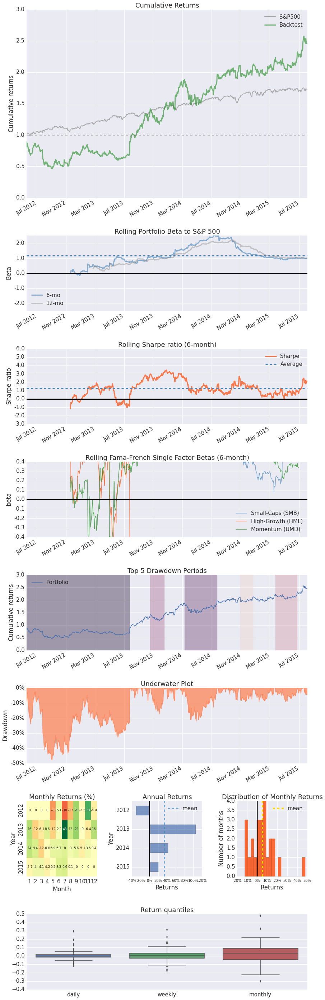
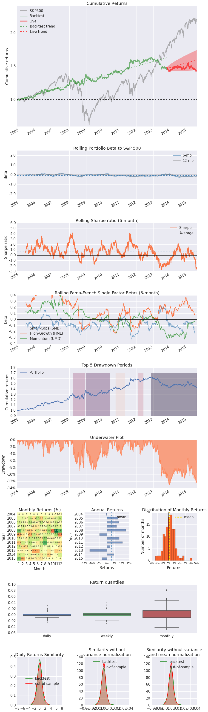
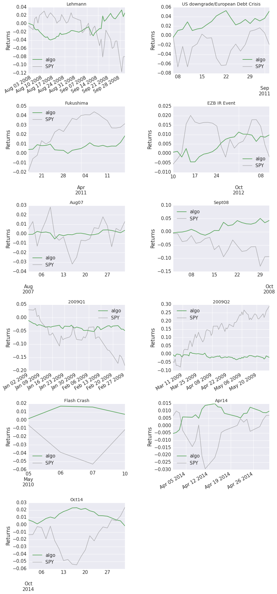

Single stock analysis example in pyfolio
Here's a simple example where we produce a set of plots, called a tear sheet, for a stock.
Import pyfolio
%matplotlib inline
import pyfolio as pf
Fetch the daily returns for a stock
stock_rets = pf.utils.get_symbol_rets('FB')
Create a full tear sheet for the single stock
This will show charts about returns and shock events.
pf.create_returns_tear_sheet(stock_rets)
Entire data start date: 2012-05-21 00:00:00+00:00
Entire data end date: 2015-08-04 00:00:00+00:00
Backtest Months: 38
Backtest
sortino_ratio 1.65
omega_ratio 1.18
max_drawdown -0.48
calmar_ratio 0.79
annual_return 0.38
stability 0.87
sharpe_ratio 0.85
annual_volatility 0.44
alpha 0.20
beta 0.98
Worst Drawdown Periods
net drawdown in % peak date valley date \
0 47.90 2012-05-21 00:00:00+00:00 2012-09-04 00:00:00+00:00
1 22.06 2014-03-10 00:00:00+00:00 2014-04-28 00:00:00+00:00
2 17.34 2013-10-18 00:00:00+00:00 2013-11-25 00:00:00+00:00
4 9.21 2014-10-28 00:00:00+00:00 2014-11-19 00:00:00+00:00
3 9.20 2015-03-24 00:00:00+00:00 2015-05-12 00:00:00+00:00
recovery date duration
0 2013-07-25 00:00:00+00:00 309
1 2014-07-24 00:00:00+00:00 99
2 2013-12-17 00:00:00+00:00 43
4 2014-12-22 00:00:00+00:00 40
3 2015-06-23 00:00:00+00:00 66
2-sigma returns daily -0.054
2-sigma returns weekly -0.110
dtype: float64
/opt/miniconda/lib/python2.7/site-packages/matplotlib/cbook.py:137: MatplotlibDeprecationWarning: The "loc" positional argument to legend is deprecated. Please use the "loc" keyword instead.
warnings.warn(message, mplDeprecation, stacklevel=1)

Create a full tear sheet for an equal-weight portfolio of:
- Long SPY
- Short QQQ
- Long GLD
- Long TLT
Additionally, we set the live start date as an example.
stock_rets_SPY = pf.utils.get_symbol_rets('SPY')
stock_rets_QQQ = pf.utils.get_symbol_rets('QQQ')
stock_rets_GLD = pf.utils.get_symbol_rets('GLD')
stock_rets_TLT = pf.utils.get_symbol_rets('TLT')
portfolio_4_assets_rets = pf.timeseries.portfolio_returns([stock_rets_SPY, -1 * stock_rets_QQQ, stock_rets_GLD, stock_rets_TLT],
exclude_non_overlapping=True)
pf.create_full_tear_sheet(portfolio_4_assets_rets, live_start_date='2013-10-22')
Entire data start date: 2004-11-19 00:00:00+00:00
Entire data end date: 2015-08-04 00:00:00+00:00
Out-of-Sample Months: 21
Backtest Months: 106
Backtest Out_of_Sample All_History
sortino_ratio 0.96 -0.43 0.78
omega_ratio 1.12 0.95 1.09
max_drawdown -0.11 -0.08 -0.13
calmar_ratio 0.41 -0.20 0.28
annual_return 0.05 -0.02 0.04
stability 0.94 0.04 0.83
sharpe_ratio 0.65 -0.28 0.53
annual_volatility 0.07 0.06 0.07
alpha 0.05 0.00 0.04
beta -0.04 -0.17 -0.05
Worst Drawdown Periods
net drawdown in % peak date valley date \
0 13.06 2012-11-13 00:00:00+00:00 2013-12-19 00:00:00+00:00
2 8.96 2008-03-17 00:00:00+00:00 2008-08-15 00:00:00+00:00
1 8.85 2008-12-30 00:00:00+00:00 2009-07-29 00:00:00+00:00
4 4.66 2010-10-06 00:00:00+00:00 2011-01-27 00:00:00+00:00
3 4.38 2012-01-31 00:00:00+00:00 2012-04-03 00:00:00+00:00
recovery date duration
0 NaN NaN
2 2008-12-10 00:00:00+00:00 193
1 2010-06-07 00:00:00+00:00 375
4 2011-04-27 00:00:00+00:00 146
3 2012-06-01 00:00:00+00:00 89
2-sigma returns daily -0.008
2-sigma returns weekly -0.016
dtype: float64
Stress Events
mean min max
Lehmann 0.001 -0.016 0.031
US downgrade/European Debt Crisis 0.002 -0.018 0.015
Fukushima 0.001 -0.006 0.007
EZB IR Event 0.000 -0.007 0.004
Aug07 0.000 -0.006 0.005
Sept08 0.002 -0.016 0.031
2009Q1 -0.001 -0.012 0.015
2009Q2 -0.000 -0.012 0.020
Flash Crash 0.002 -0.009 0.015
Apr14 0.000 -0.005 0.009
Oct14 -0.000 -0.007 0.007

